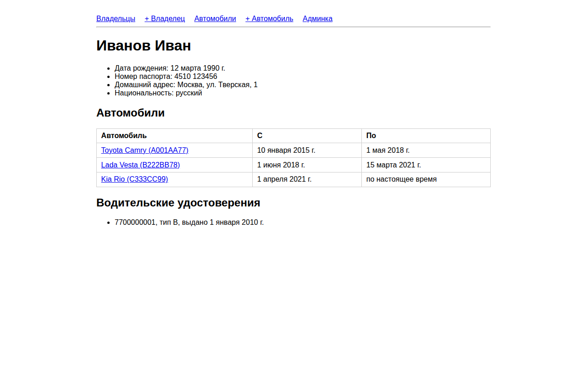
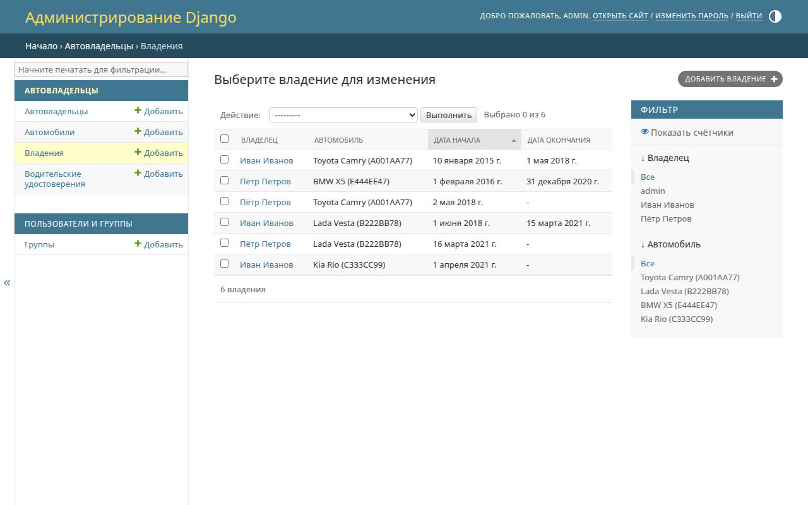
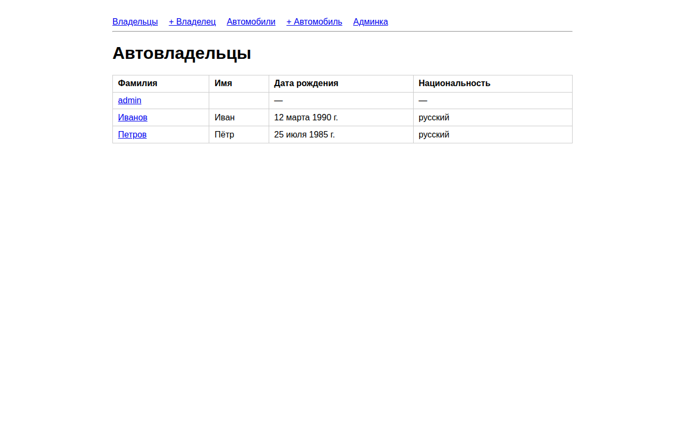
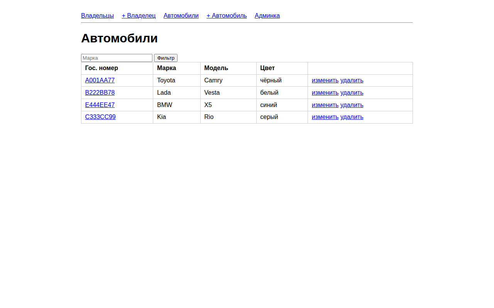
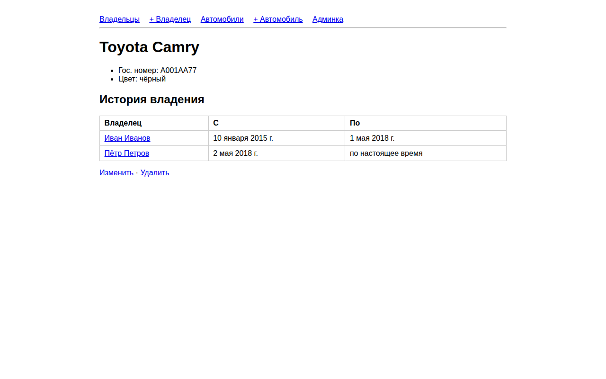
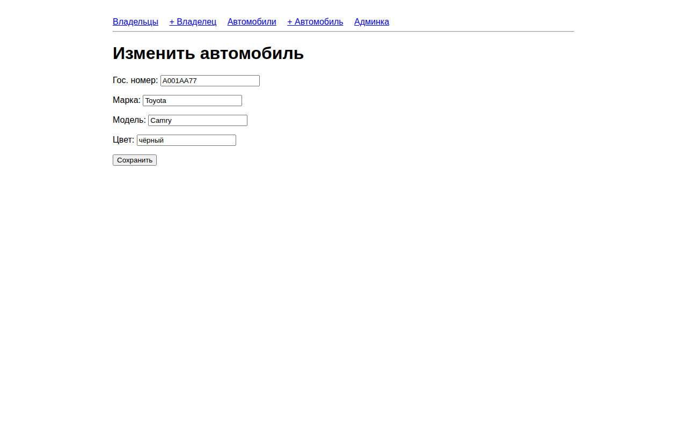
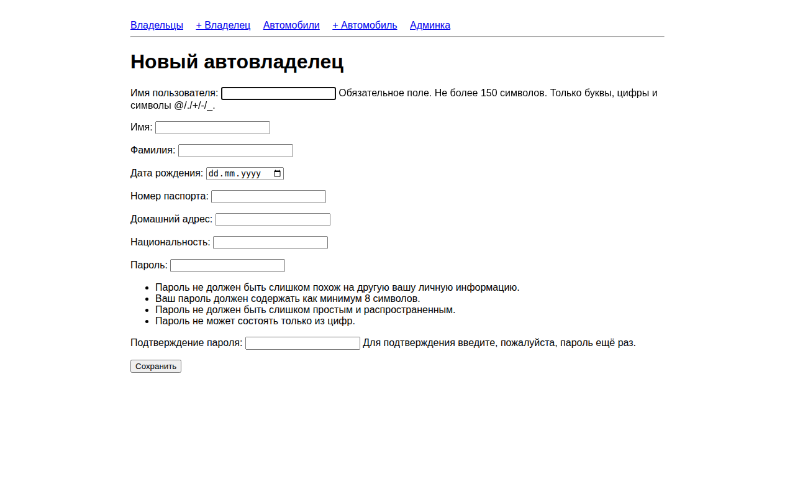
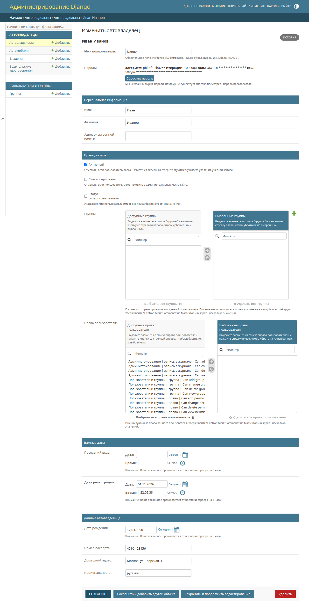
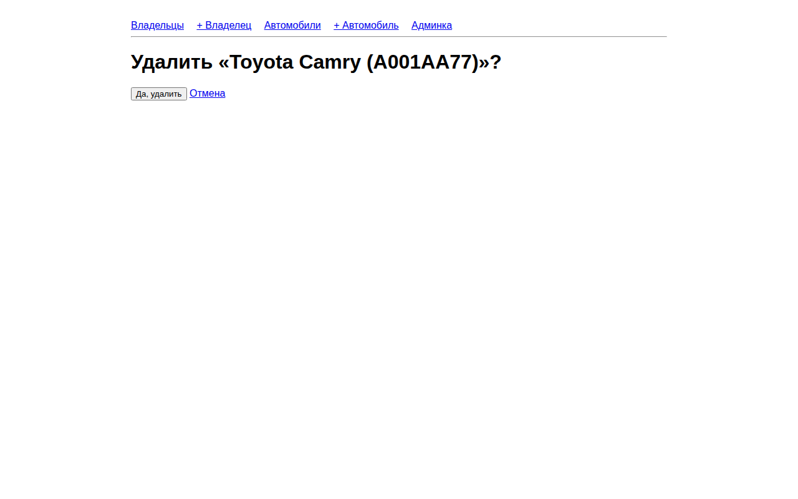

Практики 2.1–2.3 — Django: автовладельцы
Цель работы
Познакомиться с Django: описать модели и связи, работать с админ-панелью, написать представления на функциях и на классах, подключить шаблоны и формы, расширить модель пользователя.
Проект django_project_murashov, приложение project_first_app. СУБД — SQLite, как в практике: для учебного проекта не нужен отдельный сервер, а файл db.sqlite3 лежит в .gitignore.
Как устроен запрос
flowchart LR
B[Браузер] --> U[urls.py проекта]
U --> A[urls.py приложения]
A --> V[views.py]
V --> M[models.py / ORM]
M <--> DB[(SQLite)]
V --> T[шаблон]
T --> BПроектный urls.py через include() передаёт запрос в urls.py приложения, оттуда он попадает в представление. Представление берёт данные через ORM и отдаёт их в шаблон. Такое разделение (MVT) позволяет менять шаблон, не трогая логику.
Запуск
cp .env.example .env # необязательно: задать DJANGO_SECRET_KEY
pip install -r requirements.txt
python manage.py migrate
python manage.py seed # 2 владельца, 4 автомобиля; пароли из .env или случайные (печатаются)
python manage.py runserver
python manage.py test # 8 тестов
Секретный ключ и пароли демо-пользователей берутся из .env, который лежит в .gitignore. Без .env ключ генерируется случайно, а пароли seed печатает при создании пользователей. Так в коде и истории git нет паролей.
Практика 2.1 — модели, админка, первое представление
Модели по схеме из задания (рисунок 2 практики 2.1), имена латиницей:
| Таблица | Поля |
|---|---|
CarOwner |
last_name, first_name (из AbstractUser), birth_date |
Car |
state_number (15), brand (20), model (20), color (30, необязательно) |
Ownership |
owner → CarOwner, car → Car, start_date, end_date (необязательно) |
DriverLicense |
owner → CarOwner, license_number (10), type (10), issue_date |
erDiagram
CarOwner ||--o{ Ownership : "владеет"
Car ||--o{ Ownership : "принадлежит"
CarOwner ||--o{ DriverLicense : "имеет"
CarOwner {
string last_name
string first_name
date birth_date
string passport_number
string home_address
string nationality
}
Car {
string state_number
string brand
string model
string color
}
Ownership {
date start_date
date end_date
}
DriverLicense {
string license_number
string type
date issue_date
}- Связь автомобилей и владельцев «многие ко многим» идёт через
Ownership(ManyToManyField(through=...)), потому что у владения есть даты:
class Car(models.Model):
...
owners = models.ManyToManyField(
settings.AUTH_USER_MODEL, through="Ownership", related_name="cars", verbose_name="Владельцы"
)
class Ownership(models.Model):
owner = models.ForeignKey(
settings.AUTH_USER_MODEL, on_delete=models.CASCADE, related_name="ownerships", verbose_name="Владелец"
)
car = models.ForeignKey(Car, on_delete=models.CASCADE, related_name="ownerships", verbose_name="Автомобиль")
start_date = models.DateField("Дата начала")
end_date = models.DateField("Дата окончания", null=True, blank=True)
- Все модели зарегистрированы в
admin.py. Админка — самый быстрый способ ввести данные и проверить, что связи между моделями работают, ещё до того, как написаны формы. - Команда
seedсоздаёт двух владельцев и четыре автомобиля. У каждого владельца не меньше трёх автомобилей, а периоды владения одним автомобилем не пересекаются (проверено тестом). - Представление
owner_detail(FBV) и шаблонowner.html, маршрутowner/<int:owner_id>/. Владелец сid=1— первый созданный (админ создаётся после владельцев).
Представление, маршрут и шаблон:
# views.py
def owner_detail(request, owner_id):
owner = get_object_or_404(CarOwner, pk=owner_id)
ownerships = owner.ownerships.select_related("car")
return render(request, "owner.html", {"owner": owner, "ownerships": ownerships, "licenses": owner.licenses.all()})
# urls.py
path("owner/<int:owner_id>/", views.owner_detail, name="owner_detail"),
{# templates/owner.html #}
{% extends "base.html" %}
{% block content %}
<h1>{{ owner.last_name }} {{ owner.first_name }}</h1>
<table>
<tr><th>Автомобиль</th><th>С</th><th>По</th></tr>
{% for o in ownerships %}
<tr>
<td><a href="{% url 'car_detail' o.car.pk %}">{{ o.car }}</a></td>
<td>{{ o.start_date }}</td>
<td>{{ o.end_date|default:"по настоящее время" }}</td>
</tr>
{% empty %}
<tr><td colspan="3">Нет автомобилей.</td></tr>
{% endfor %}
</table>
{% endblock %}


Практика 2.2 — представления и шаблоны
- FBV:
owner_list— все владельцы (/owners/). - CBV:
CarListView(/cars/, фильтр по марке?brand=),CarDetailView(/cars/<pk>/, история владения),CarUpdateView(/cars/<pk>/update/). - Шаблоны наследуются от
base.html, ссылки строятся через{% url %}.
# views.py
def owner_list(request):
return render(request, "owners.html", {"owners": CarOwner.objects.order_by("last_name", "username")})
class CarListView(ListView):
model = Car
template_name = "car_list.html"
context_object_name = "cars"
def get_queryset(self):
qs = super().get_queryset()
brand = self.request.GET.get("brand")
return qs.filter(brand__iexact=brand) if brand else qs
class CarDetailView(DetailView):
model = Car
template_name = "car_detail.html"
class CarUpdateView(UpdateView):
model = Car
form_class = CarForm
template_name = "car_form.html"
success_url = reverse_lazy("car_list")
{# templates/car_list.html #}
<form method="get">
<input name="brand" placeholder="Марка" value="{{ request.GET.brand }}">
<button>Фильтр</button>
</form>
{% for car in cars %}
<tr>
<td><a href="{% url 'car_detail' car.pk %}">{{ car.state_number }}</a></td>
<td>{{ car.brand }}</td><td>{{ car.model }}</td><td>{{ car.color|default:"—" }}</td>
<td><a href="{% url 'car_update' car.pk %}">изменить</a> <a href="{% url 'car_delete' car.pk %}">удалить</a></td>
</tr>
{% endfor %}




Практика 2.3 — расширение пользователя и формы
- Почему
AbstractUser, а не профиль илиAbstractBaseUser: стандартная аутентификация остаётся, а новые поля лежат в той же таблице, поэтому не нужны лишние запросы и связьOneToOne. Модель подменяют до первой миграции, иначе схему БД придётся переделывать. CarOwner(AbstractUser)— это и есть пользователь (AUTH_USER_MODEL = 'project_first_app.CarOwner'). Добавлены поляpassport_number,home_address,nationality.- В Django-admin новые поля вынесены в отдельную группу «Данные автовладельца» (
fieldsetsиadd_fieldsets). - Страница владельца выводит новые поля.
- FBV
owner_create(/owners/new/): формаCarOwnerForm(UserCreationForm)создаёт пользователя с новыми атрибутами и паролем, после сохранения редирект на страницу владельца. - CBV
CarCreateView(/cars/create/) иCarUpdateViewиспользуют формуCarForm, аCarDeleteView(/cars/<pk>/delete/) удаляет автомобиль после подтверждения.
Пользователь с новыми полями, форма создания и представление на функции:
# models.py
class CarOwner(AbstractUser):
birth_date = models.DateField("Дата рождения", null=True, blank=True)
passport_number = models.CharField("Номер паспорта", max_length=20, blank=True)
home_address = models.CharField("Домашний адрес", max_length=200, blank=True)
nationality = models.CharField("Национальность", max_length=50, blank=True)
# settings.py
AUTH_USER_MODEL = "project_first_app.CarOwner"
# forms.py
class CarOwnerForm(UserCreationForm):
class Meta(UserCreationForm.Meta):
model = CarOwner
fields = ("username", "first_name", "last_name", "birth_date",
"passport_number", "home_address", "nationality")
# views.py
def owner_create(request):
form = CarOwnerForm(request.POST or None)
if request.method == "POST" and form.is_valid():
owner = form.save()
return redirect("owner_detail", owner_id=owner.pk)
return render(request, "owner_form.html", {"form": form})
Создание и удаление автомобиля на классах и админка пользователя с новыми полями:
# views.py
class CarCreateView(CreateView):
model = Car
form_class = CarForm
template_name = "car_form.html"
success_url = reverse_lazy("car_list")
class CarDeleteView(DeleteView):
model = Car
template_name = "car_confirm_delete.html"
success_url = reverse_lazy("car_list")
# admin.py
_extra = ("Данные автовладельца", {"fields": ("birth_date", "passport_number", "home_address", "nationality")})
@admin.register(CarOwner)
class CarOwnerAdmin(UserAdmin):
fieldsets = UserAdmin.fieldsets + (_extra,)
add_fieldsets = UserAdmin.add_fieldsets + (_extra,)
{# templates/owner_form.html #}
<form method="post">
{% csrf_token %}
{{ form.as_p }}
<button type="submit">Сохранить</button>
</form>



Вывод
Выполнены практики 2.1–2.3. Описаны модели автовладельцев, автомобилей, владений и водительских удостоверений, связь «многие ко многим» оформлена через промежуточную модель с датами. Написаны представления на функциях и на классах, шаблоны с наследованием, формы создания, изменения и удаления. Пользователь расширен через AbstractUser, новые поля видны в админке и на сайте. Работа проверена восемью тестами.